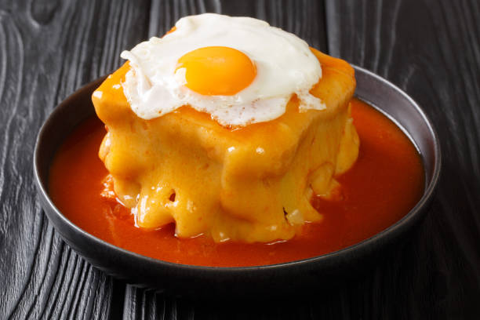

Francesinha

Description
If you come to Portugal, especially if you come to Porto, you will for sure ear "Have you ever tried a Francesinha?" wich is the most amazing sandwich you will ever try. But please dont try to pick it up with your hands, it is meant to be eaten with a knife and a fork.
And before i show to you how you can make this amazing dish, i leave you where some reviews of some people that tried it:
- "There's three specialties in Portugal: port wine, egg tarts and the ever-so-famous Francesinha sandwich. This epic eight layer sandwich, a Porto specific specialty, is mighty yet magnificent but not to be missed"
- "The Francesinha is heaven. It's so much meat and cheese and egg gooeyness. I washed it down with a Super Bock Stout."
Ingredients
For the sauce
- 1tsb olive oil
- 1tsb lard
- 1 small onion
- 2 garlic cloves
- 1 bay leaf
- 1 tin of diced tomatos
- 400ml beef stock
- half cup ruby Porto wine
- 500ml blonde beer
- 1 piri-piri seedless
- 2tbsp worcester sauce
- salt
- black peper
For the Francesinha
- 2 slices of soft bread
- 1 thin beef steak
- 1 pork sausage
- 2 slices of ham
- 1 cured pork sausage
- 2 slices of ham
- 5 slices of cheese
- 1 egg
Preparation
- Place a medium saucepan over low to medium heat. Once the pan is hot, add the lard, olive oil, garlic, and bay leaf. Let it cook for a minute before adding the onion. Let it simmer for about 8 minutes until the onion turns translucent.
- Add the tinned tomatoes and the beef stock. Bring it to a boil and let it simmer for about 10 minutes.
- Add the remaining sauce ingredients: port wine, beer, piri-piri and Worcestershire sauce, cook for another 10 minutes.
- With a hand mixer, blend everything until smooth. Let the sauce simmer for 30 minutes. The texture should be similar to a gravy, but slightly more liquid.
- If necessary, add some corn starch or other thickening to your taste. Make sure to dissolve it in cold water before adding to the mixture. Let it cook until it reaches your preferred texture.
- Season it with salt and black pepper, set it aside.
- Place a frying pan over high heat. Meanwhile, cut the sausages in half then butterfly-cut them.
- Fry the sausages in their own fat, then use the remaining fat to fry the steak. Finally, lightly fry the ham slices.
- Gently toast the bread slices. Start putting the Francesinha together: On a plate, place one bread slice, then a slice of cheese, ham, steak, the sausages, and the final bread slice.
- Fry the egg, place it on top of the sandwich, cover it with the cheese slices, leaving the egg-yolk visible.
- Bring the sauce to a boil, then spoon it on top of the sandwich. The hot sauce will melt the cheese. Serve it either with a side of French fries, or surrounded by fries if your plate is big enough!